ETL YouTube Statistics
This project takes a closer look at the Extract | Transform | Load process in regards to trending YouTube Video Statistics in 2018
Inspiration
The true power of data analysis is the discovery of meaningful trends, informing conclusions, creating data visualization, and supporting decision making. Business from all industries and sectors can benefit from the information data provides. However, before any of the aforementioned processes can happen ETL (Extract, Transform, Load) must take place. ETL is the vital first step in any data driven project. In fact it is said that data professionals spend eighty percent of their time on data preparation (ETL) and twenty percent on actual data analysis.
This project aimed to address the procedures necessary during ETL.
Data
A YouTube video statistics dataset was found on kaggle and utilized for the purposes of this project. The dataset included daily statistics for trending videos on YouTube split into separate regions. The United States (US), Great Britain (GB), Canada (CA), and Germany (DE) were selected from the list of regions. The data was collected using YouTube's API and stored into CSV and JSON files.
Extract
Extract: is the process of reading data from a database. In this stage, the data is collected, often from multiple and different types of sources.
After the data was obtained from Kaggle it was extracted using pandas which is a software library written for the Python programming language for data manipulation and analysis. Pandas, which is derived from "panel data", is capable of accomplishing several task but in regards to extraction it's ability for reading/importing and writing/exporting data between in-memory data structures and different file formats such as csv, excel, json, ect was utilized.
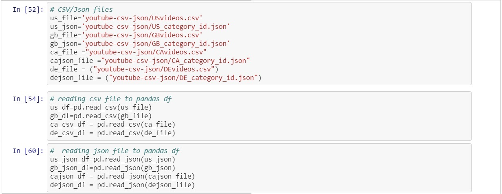
Above the file path to the data was created and then read using pandas pd.read_csv() function and pd.read_json() function to store csv and json files into dataframes. Now that the data had been extracted and placed into dataframes the information could be altered, cleaned, and transformed easily.
Transform
Transform: is the process of converting the extracted data from its previous form into the form it needs to be in so that it can be placed into another database. Transformation occurs by using rules or lookup tables or by combining the data with other data.
When looking at the csv and json dataframes a few problems were found. Firstly the json dataframe was semi structured which means it had an apparent pattern but it did not obey the rules of relational databases such as PostgreSQL which is were the data was eventually going to be loaded. The csv dataframe was far more structured however the "publish_time" column contained a timestamp that would not have been easily accepted by PostgreSQL.
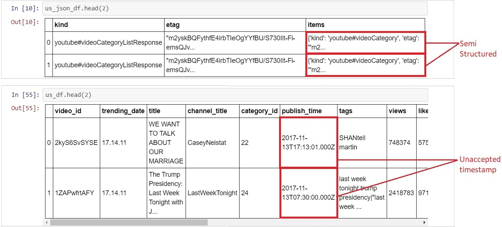
In order to address these issue the data had to be cleaned. The csv file contained pertinent information ('views', 'likes', 'dislikes', 'category_id', ect) relating to each of the trending videos. The major feature missing from the csv file was the video type. Fortunately the json file contained this information ('Film & Animation', 'Music', 'Sports', ect) as well as the id associated with each type. This meant that the csv and json file information could be merged to create a far more in-depth dataframe.
To pull the required information from the json file a for loop was written to grab the title and id from the semi structured "items" column.
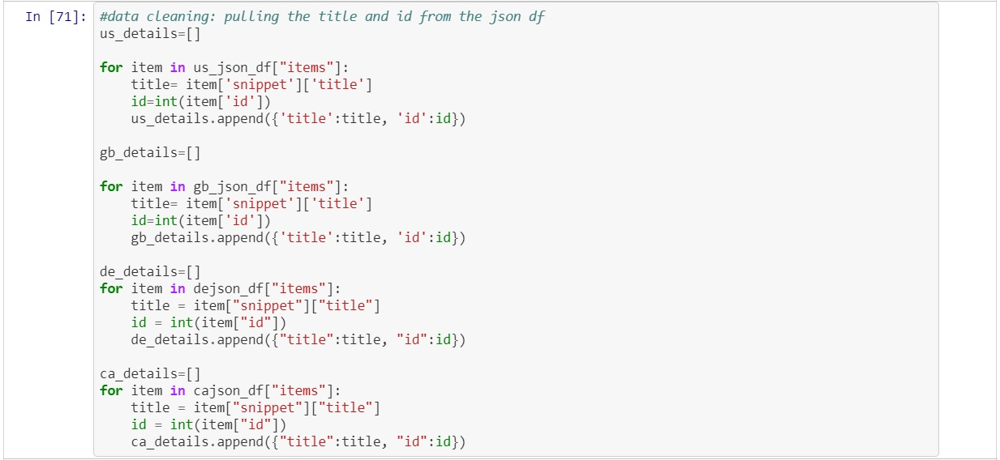
The title and id were stored into a dictionary that was nested within a list. Now that the data was in a structured format a cleaned dataframe could be created.
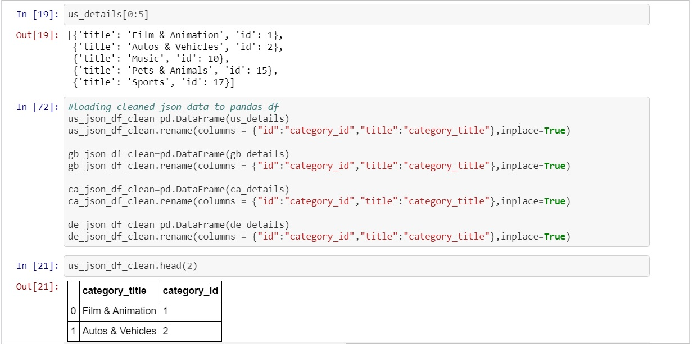
With the json dataframe information structured and the columns renamed the focus of the cleaning now shifted to the csv file. As mention above the csv files "publish_time" had a timestamp that is foreign to PostgreSQL. There are ways to convert from one time stamp to another, however, that process can be extremely frustrating and lead to more unexpected errors. For this reason a different approach was utilized. The "publish_time" column was a string type which allowed for string indexing to be used to pull out the actual publish time ("17:08:49") from the current format ("2017-11-13T17:08:49.000Z")
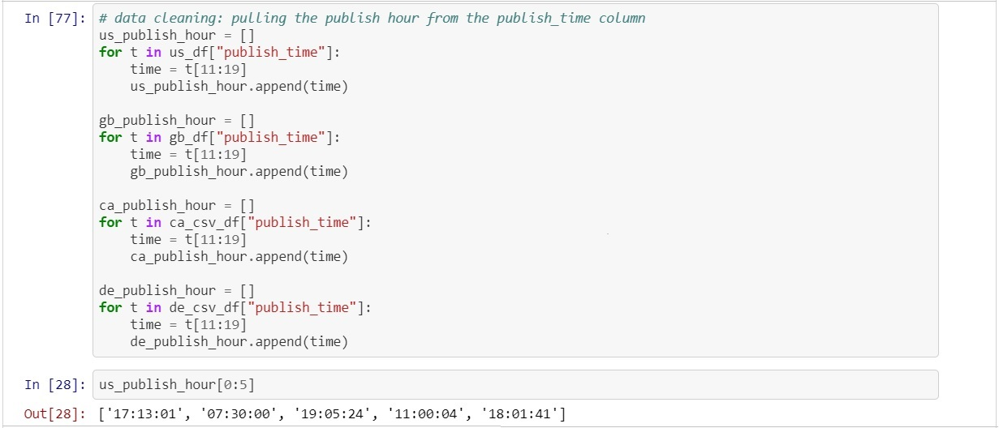
Once again a for loop was used to pull the information out of the timestamp because the 12th through 19th character was always the time for each item in the list so a slice was created using the index of the string in the form of "t[11:19]" (*Python starts counting its index at 0 instead of 1 which is why the slice begins at 11 and now 12). The publish time was now stored into a new column within the original csv dataframes.
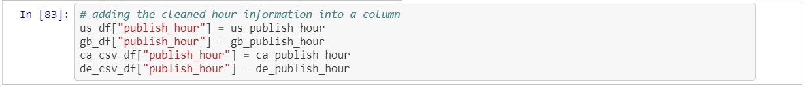
At this point both the json and csv dataframe had been cleaned and the transformation process could begin. The intention was to transform the data by merging the json and csv dataframes to provide the whole story for each of the trending videos. Both the json and csv dataframes had a "category_id" column which is what allowed a pd.merge() function to be utilized (*pd.merge() is very similar to a JOIN statement in SQL).
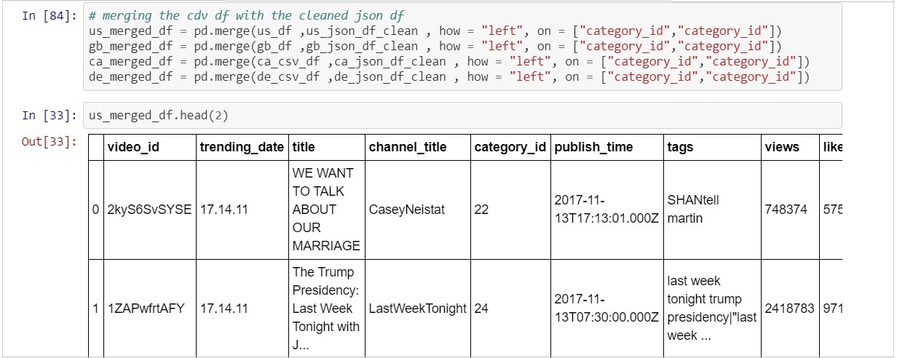
With the csv and json data merged the final step of the transformation could take place. The final task was to select the relevant columns and store them into the final dataframe that would be loaded in to PostgreSQL.
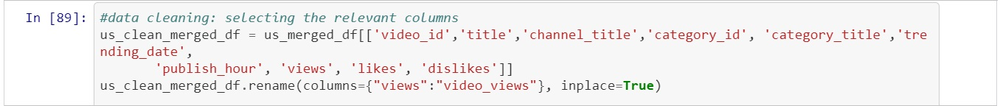
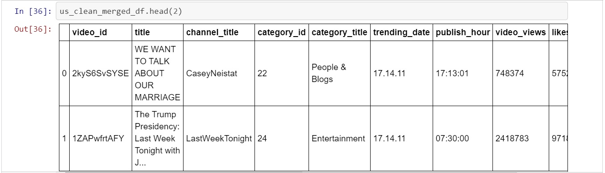
Load
Load: is the process of writing the data into the target database.
The first step of the loading process was to create a database (youtube_db) using pgAdmin which is a management tool for PostgreSQL.
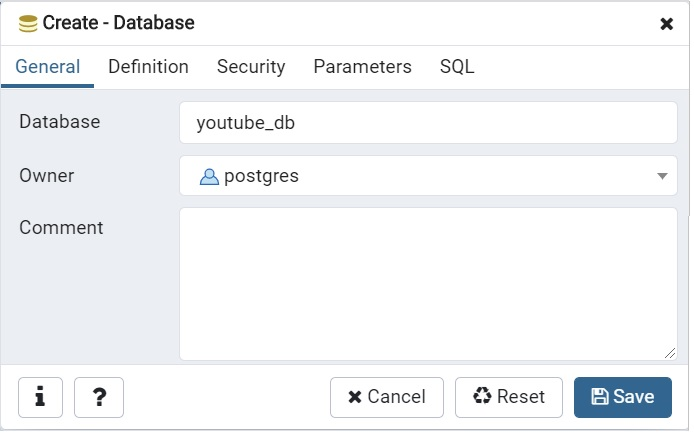
With the database made the tables could now be created. It was very important that the columns in the tables matched those in the final dataframes made at the end of the transformation process.
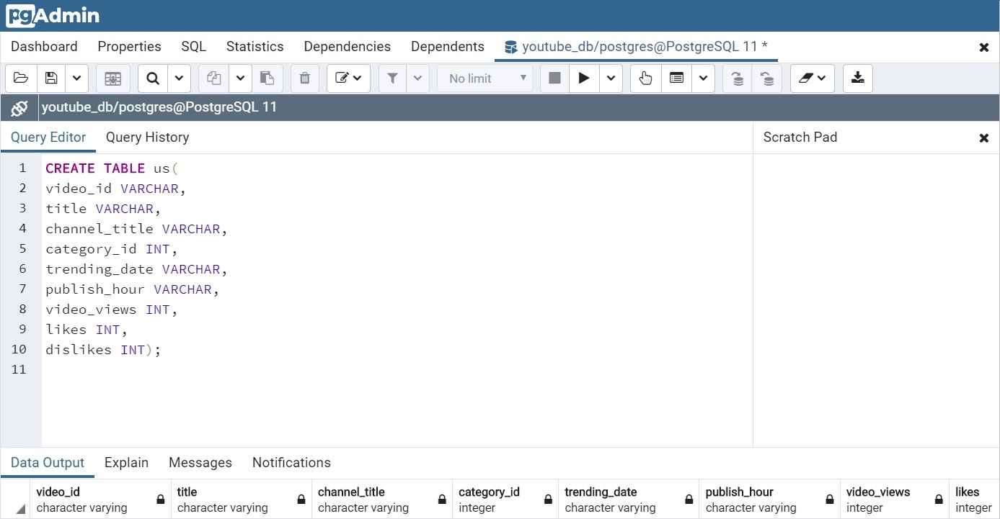
Now that the database and tables (us, great britain, germany, canada) had been created a connection to them could be established in python via SQLAlchemy which is an open-source SQL toolkit and object-relational mapper. SQLAlchemy requires the username and password along with the name of the database and type of SQL being utilized.
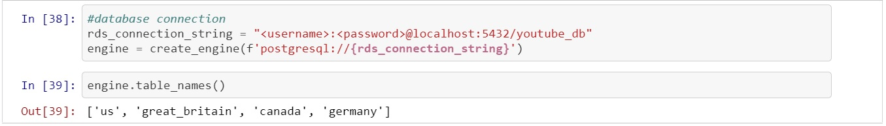
With the connection established the data could finally be populated into the tables to complete the loading process.
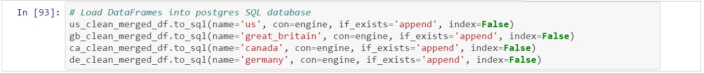
To ensure the data had been stored properly a conformational query was written.
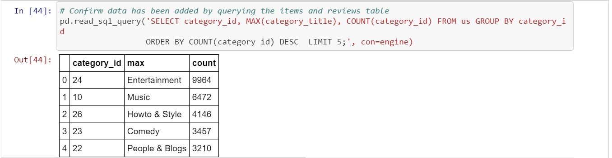